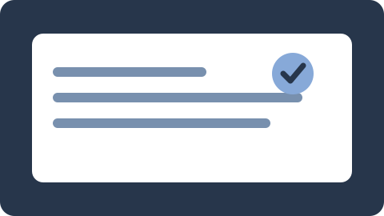

Aprende a tu ritmo
Organiza tus temas y consulta recursos de programación desde una sola página.

Mi ruta de estudio
| Tema | Objetivo | Nivel |
|---|---|---|
| HTML | Organizar la estructura de una página | Básico |
| CSS | Definir la presentación visual | Básico |
| JavaScript | Agregar lógica e interacción | Intermedio |
Material adicional

Preguntas frecuentes
¿Necesito aprender HTML antes de CSS?
Conviene conocer la estructura HTML antes de trabajar en profundidad con los estilos CSS.
¿HTML es un lenguaje de programación?
No. HTML es un lenguaje de marcado que describe la estructura y el significado del contenido.
¿Puedo usar esta página sin JavaScript?
Sí. El contenido principal y los enlaces funcionan sin JavaScript; el script solo actualiza un mensaje de estado.
Mi avance
Los recursos JavaScript todavía no han actualizado este mensaje.